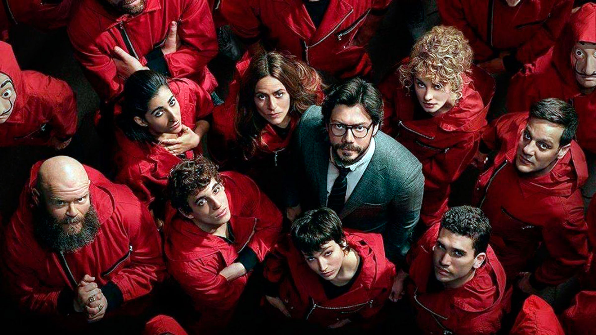
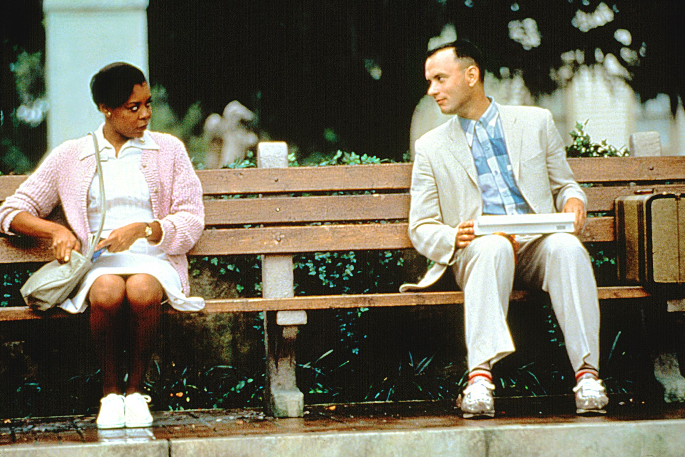
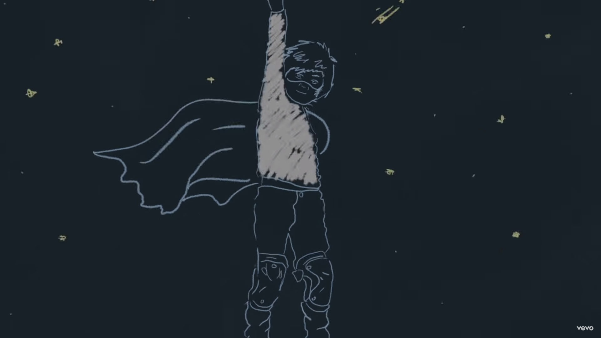
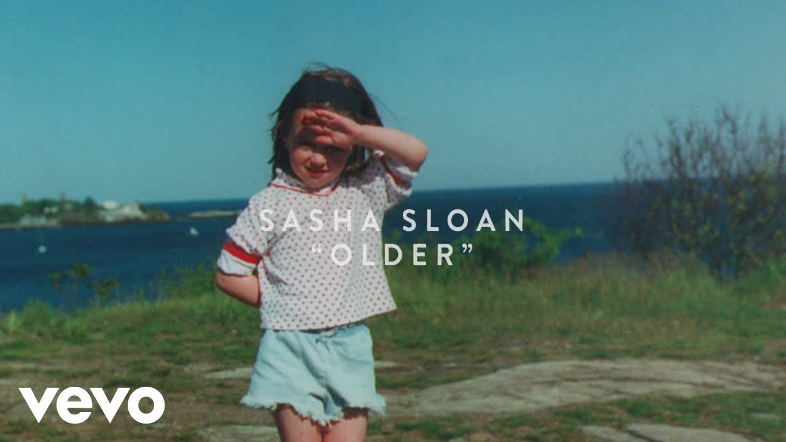
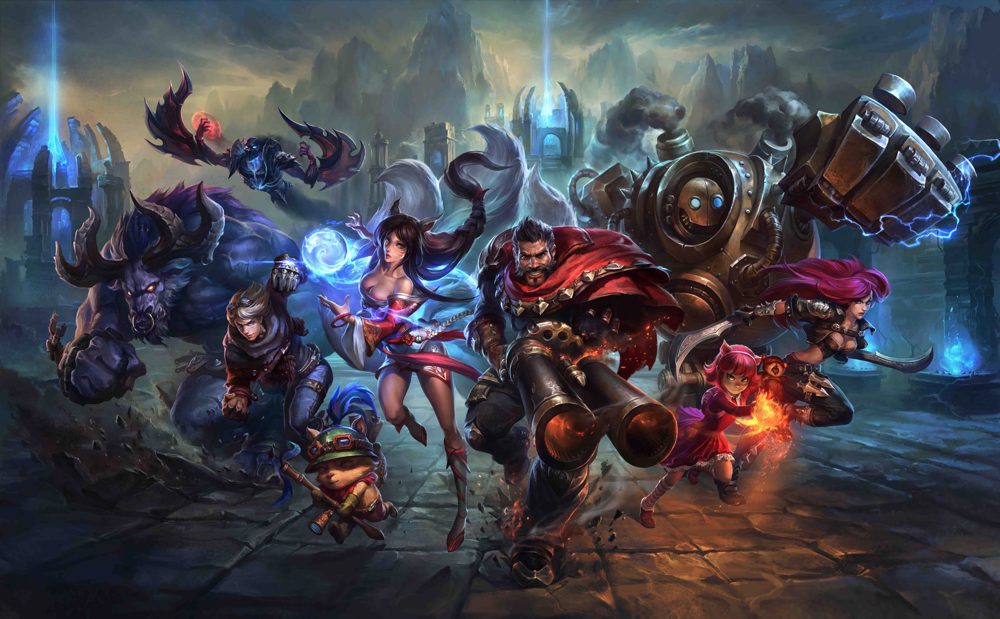
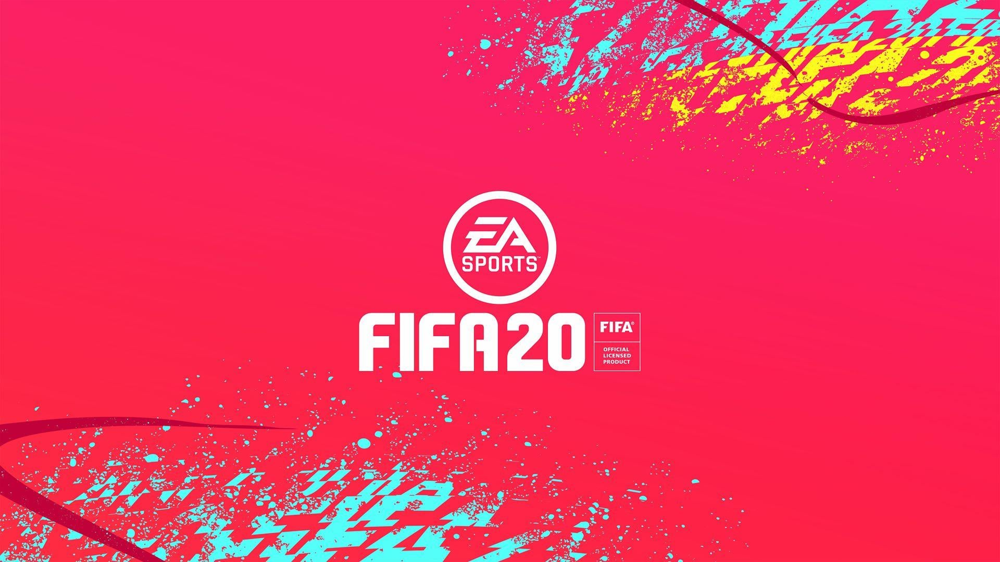

I knew about Netflix on a cold day in 2017. I am actually addicted to it, from now i watched almost all the great movies and tv shows on Netflix. I have a Netflix list but I would prefer Dark, Stranger Things, Lacasa De Papel and Forrest Gump because those films change me a lot about my thoughts, change my way to see the outside world. And they also make a lot of crazy action scenes.



My older brother was a producer, he inspired me a lot about music. When I was a kid, he played rap/hiphop music for me. My passion about hip hop/rapping grew from my small room in my house. Then, when I was in high school, he turned on edm music like g-house, future bass, trap for me, even the US-UK music. I loved the song named Something Just Like This when the very first day that it was released. There will be a lot of things to talk about my music gout, now when through lots of good and bad things, i decided to choose some moody music like Older, Let Me Down Slowly. That was not all of my music type but I have something could make you feel so chillin, will you enjoy it ?


Of course I built that custom PC for gaming. Games I frequently plays include League of Legends, Counter Strike: Global Offensive and FIFA 20. I usually play these online games with either friends I know in person, or strangers lobbies online. I am a big fan of keeping a neat desk, and using peripherals with RGB lighting, to add to the aesthetic appeal of my setup.

